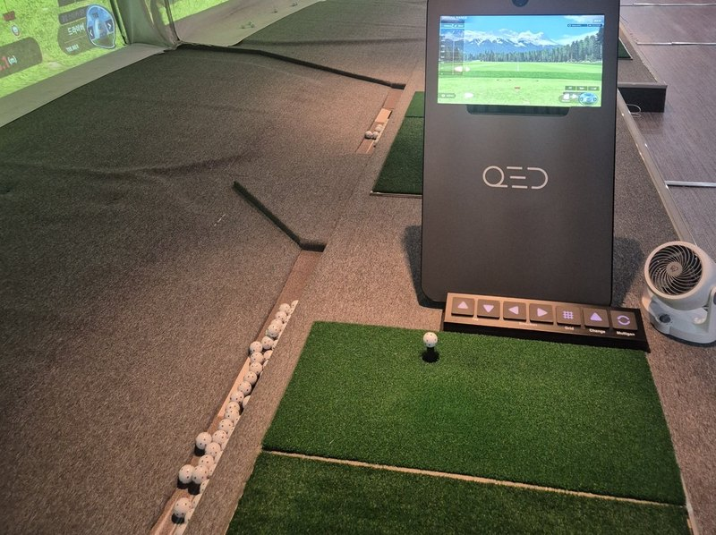

필드가 문을 닫는 계절입니다. 한국남녀프로골프 투어가 막을 내리고 일부 골프장은 동계 휴장 채비에 들어갑니다. 그러면 사람은 자연스럽게 실내로 옮겨갑니다.
대한골프협회가 11월 초에 공개한 ‘2025 한국골프지표’를 보면, 이 이동이 숫자로도 잡힙니다. 실내 스크린 이용자의 연평균 이용 횟수는 18.8회로 2023년보다 4.3회 늘었고, 1년에 20회 이상 이용한 사람이 38.6%로 가장 큰 비중이었습니다(2023년보다 9.6%포인트 증가). 골프 활동 인구 자체는 581만 명으로 줄었는데, 남은 사람들은 오히려 더 자주 갑니다.
문제는 여기서 생깁니다. 자주 가려면 준비물이 여름과 달라집니다. 여름엔 반바지에 운동화로 나가면 끝이었지만, 12월엔 주차장에서 건물까지 오는 오 분이 손을 먼저 굳게 만듭니다.
손이 굳으면 그립이 미끄러집니다. 그리고 젖은 장갑은 더 미끄럽습니다. 30분만 쳐도 손바닥에 땀이 차는데, 실내라 잘 마르지도 않습니다. 한 켤레는 끼고 한 켤레는 가방에 두는 게 가장 간단한 대비입니다.
장갑을 아예 안 끼고 치는 사람도 있습니다. 취향이니 상관없지만, 매트 위에서 클럽이 한 번 돌면 화면에 뜨는 숫자부터 흔들립니다. 스윙 스피드와 페이스 앵글은 손에서 시작되는 값이라서요.
실내는 난방이 되어 있습니다. 두꺼운 패딩을 입고 와서 타석에 서면 오 분 만에 덥고, 벗어 두면 나갈 때 춥습니다. 얇은 긴팔 위에 조끼나 얇은 패딩을 걸치는 쪽이 훨씬 편합니다.
스크린 앞에는 화면을 비추는 공간이라 바람이 지나갑니다. 땀을 흘린 상태로 그 바람을 계속 맞으면 다음 날 목이 불편해지기 쉽습니다. 수건 하나를 가방에 넣어 두면 이 문제의 절반은 해결됩니다.
매트 위에서 발이 흔들리면 축이 무너집니다. 골프화를 신고 오는 사람과 실내 운동화를 신는 사람이 갈리는데, 어느 쪽이든 바닥을 잘 잡는 게 먼저입니다. 양말은 여분으로 한 켤레. 겨울에 젖은 채로 두 시간을 서 있으면 그것만큼 발이 시린 일도 없습니다.
좌동 해천빌딩 6층 매장은 QED 4타석과 일반 3타석, 그리고 스크린 룸이 따로 있습니다. 위 사진이 QED 타석입니다. 매트 옆에 볼 트레이가 붙어 있어 공을 다시 모을 일이 적고, 조작은 옆 모니터로 합니다.
운영 시간 표기가 세 갈래로 다릅니다. 네이버 지도에는 24시간 연중무휴, 김캐디에는 00:00~23:30, 1층 배너에는 무인 24시간으로 적혀 있습니다. 겨울 심야에 갈 계획이라면 출발 전에 전화로 확인하는 편이 확실합니다.
지표에서 20회 이상 이용자가 가장 많다는 건, 한 달에 두 번꼴로 꾸준히 가는 사람이 시장의 중심이라는 뜻입니다. 겨울 석 달을 버티는 방법도 결국 그쪽입니다. 한 번에 두 시간 몰아치기보다 30분씩 자주. 장갑과 수건, 그리고 얇은 옷 한 겹만 더 챙기면 그 30분이 훨씬 편해집니다.